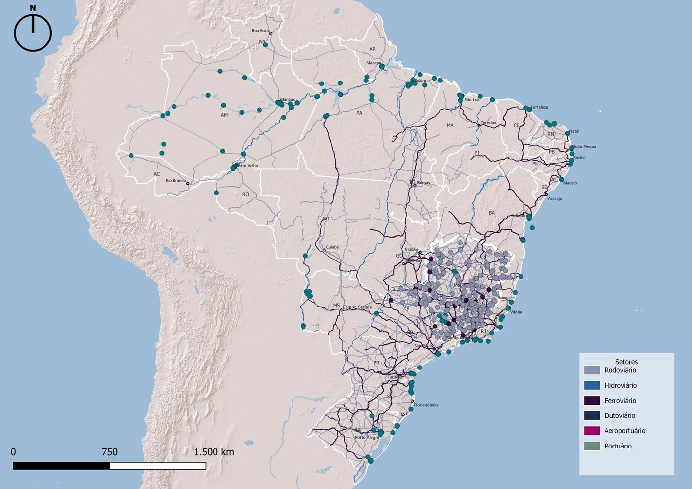

2.5D blueprint: hover the layers

★ star project2025-2026
Spatial database and project portfolio
The PostgreSQL/PostGIS database that holds the plan's portfolio of works and feeds its maps, dashboard and report.
The plan compares very different kinds of works, so every project needs its geometry, attributes and link to the territory in one place. The database already existed when I joined in 2025. I took care of it from there: what goes in, how it goes in, and whether what comes out is right.
- Ran the plan's PostgreSQL/PostGIS database: portfolio and indicator schemas, views and materialized views.
- Digitized portfolio projects and works and stored their geometry in the database.
- Wrote the SQL and Python loads that insert and update works, projects and supporting datasets.
- Ran the portfolio's spatial analyses, such as intersecting each project with the territorial planning units.
- Audited the accessibility indicator view: null lengths were wiping out the weighted average and the final score. I documented the cause and applied the fix.
- Kept the GeoPackage exports that feed QGIS, Power BI and the attribute exchange with the simulation network.
- Relational model with junction tables between works and network objects
- One materialized view per indicator
- Spatial intersection of projects and territorial units, weighted by length
- Auditing nulls and how the error carries through to the final score
- The portfolio database is described in the Long-Term Plan report released for public consultation.
- The report's maps, Power BI dashboard and tables are drawn from this database.
- I am credited on the report's technical team page (December 2025).
- PostgreSQL
- PostGIS
- SQL
- Python
- QGIS
- GeoPackage
- Power BI